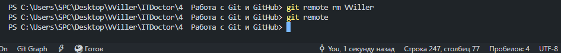

В данном разделе мы научимся работать с внешними репозиториями. Такие репозитории представляют собой версии
проекта,
хранимые в интернете или где-то в локальной сети предприятия. В подавляющем большинстве случаев для хранения
внешнего
репозитория используется специальный сайт GitHub.
Внешние репозитории используются для того, чтобы все участники проекта легко могли добавлять свой код в
проект, выполняя
коммиты в этот внешний репозиторий. Остальные участники будут забирать внесенные изменения себе в локальный
репозиторий
и продолжать работу.
Основные принципы работы с внешними репозиториями предполагают отправку, получение и добавление данных,
управление
ветками проекта. В следующих уроках мы подробно разберем данные процессы.
Итак, как уже упоминалось, в качестве внешнего репозитория обычно используют специальный бесплатный сервис GitHub. В данном уроке вам необходимо зарегистрироваться на этом сервисе для дальнейшей работы.
В предыдущем уроке мы зарегистрировались на сайте GitHub. Теперь нам нужно создать на нем свой внешний
репозиторий для
тестов. Для этого перейдите на страницу создания репозитория.
При создании репозитория мы должны указать его имя. Давайте для тестов назовем его project. Также можно
выбрать тип
репозитория: публичный или приватный. Публичный будет виден всем, а приватный только вам.
После того, как вы выберите нужные опции, нажмите на кнопку создания. После этого скопируйте себе ссылку на
созданный
репозиторий.
Для дальнейшего изложения я буду использовать свою тестовую ссылку. Пусть мой логин на GitHub будет user, а
проект я
назвал project. В этом случае ссылка на мой репозиторий будет выглядеть так:
https://github.com/user/project.git.
У вас, конечно же, ссылка будет отличаться именем юзера и, возможно, названием проекта. Но далее для
примеров я буду
пользоваться именно этой ссылкой.
В предыдущем уроке мы создали внешний репозиторий на GitHub. В дальнейшей работе мы будем обращаться к этому
репозиторию
через терминал нашего локального компьютера.
При обращении через терминал у нас спросят логин и пароль. Логином будет ваш логин на GitHub, а вот в
качестве пароля
вам нужно будет указывать специальный токен. Давайте создадим этот токен на сайте GitHub.
Для этого перейдите на страницу создания токена.
В настройках можно выбрать срок действия токена, а также права на доступ. Для наших целей права на доступ
достаточно
будет дать в первом блоке с названием repo.
Обратите внимание на то, что по умолчанию срок действия токена - 30 дней. После этого он перестанет
работать, а вам
будет выдавать, что пароль неверный. Будьте морально к этому готовы. Или просто поставьте вечный срок
действия токена.
Теперь нам необходимо добавить внешний репозиторий в наш проект. Суть добавления сводится к тому, что мы
должны придумать имя внешнего репозитория и привязать это имя к ссылке на репозиторий.
В системе Git для этой цели есть команда remote add, после которой через пробел перечисляются имя
репозитория и его ссылка. Имя репозитория мы придумываем сами. Это будет то имя, под которым репозиторий
будет называться на
нашем компьютере.
Пусть мы для нашего внешнего репозитория выберем рапространенное имя: origin. Давайте добавим репозиторий
под этим именем:
В результате добавления у вас появится имя origin, с помощью которого вы будете обращаться к этому внешнему репозиторию. Скачивание данных репозитория, однако, еще не произойдет. Для этого есть другие команды, которые мы изучим в следующих уроках.
После того, как внешний репозиторий добавлен, можно получить некоторую информацию о нем. Это делается с помощью команды remote show, после который указывается имя внешнего репозитория:
С помощью команды remote можно получить имя нашего внешнего репозитория:
После выполнения команды мы увидим имя, которое дали внешнему репозиторию:
Можно просмотреть адреса для чтения и записи данного внешнего репозитория. Для этого нужно выполнить команду remote с флагом -v:
Чтобы переименовать внешний репозиторий мы используем команду remote rename, после которой через пробел указываем исходное и новое имя. Для примера давайте переименуем внешний репозиторий из old в new:
Теперь давайте с помощью команды remote проверим вступило ли новое имя внешнего репозитория в силу:
Можно удалить внешний репозиторий. Точнее, мы можем удалить связь между именем репозитория и его ссылкой. Сам
репозиторий по-прежнему останется в интернете.
Для того, чтобы удалить имя внешнего репозитория, используется команда remote rm, в которой через пробел
указывается имя
внешнего репозитория:
Давайте проверим, есть ли у нас удаленный репозиторий:
После выполнения команды мы увидим лишь пустую строку, что означает у нас нет внешнего репозитория, в том числе и отслеживаемых веток и всех настроек, которые мы делали для него.
Название "внешние" репозитории имеет некоторый нюанс. Дело в том, что в русской литературе внешние
репозитории
называются "удаленные" - от слова "далеко". Таким образом переводчики перевели английское слово remote.
Но ведь слово "удаленные" мы также используем для другого понятия - "то, что было удалено". В итоге,
получается
путаница. Особенно радуют выражения вида удаление удаленных репозиториев. У читающего сразу возникает
вопрос, как же мы
можем удалить удаленные репозитории, если они уже удаленные, то есть удалены?
Я не знаю, чем думали эти нехорошие люди, когда переводили слово "remote" таким оригинальным образом, но я
посылаю им
лучи ненависти и призываю всех использовать термин внешние репозитории. Везде в учебнике используется именно
он.
Но имейте ввиду, что везде - и в учебниках, и на форумах используется слово "удаленные". При разговорах и
переписке я
рекомендую вам использовать слово "внешние" и отсылать всех к этой статье.